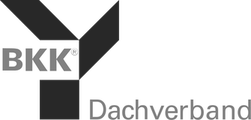
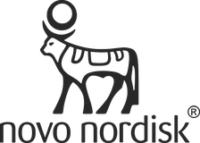
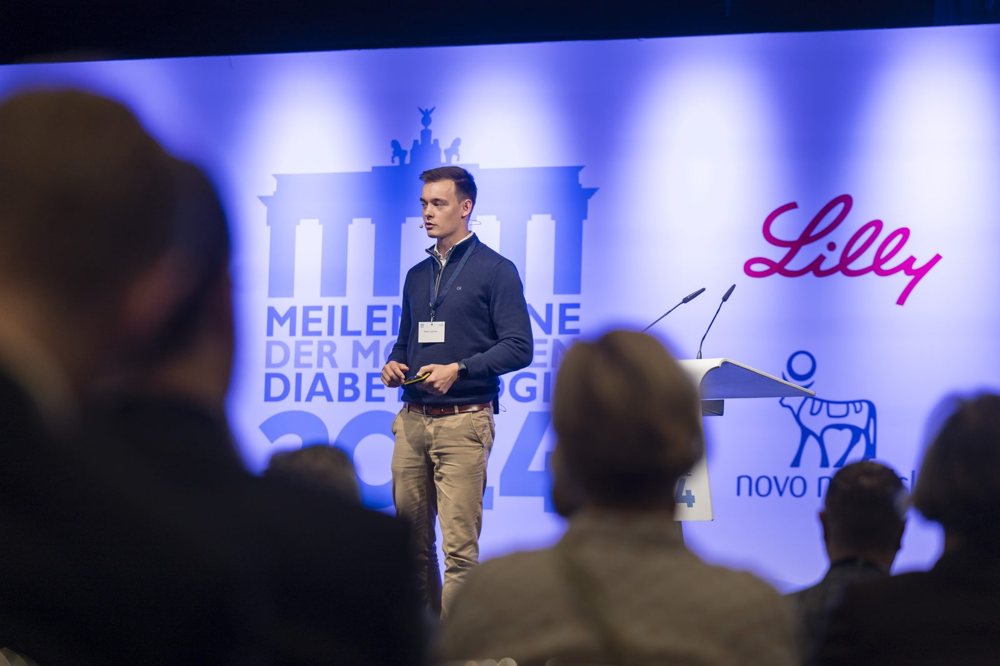
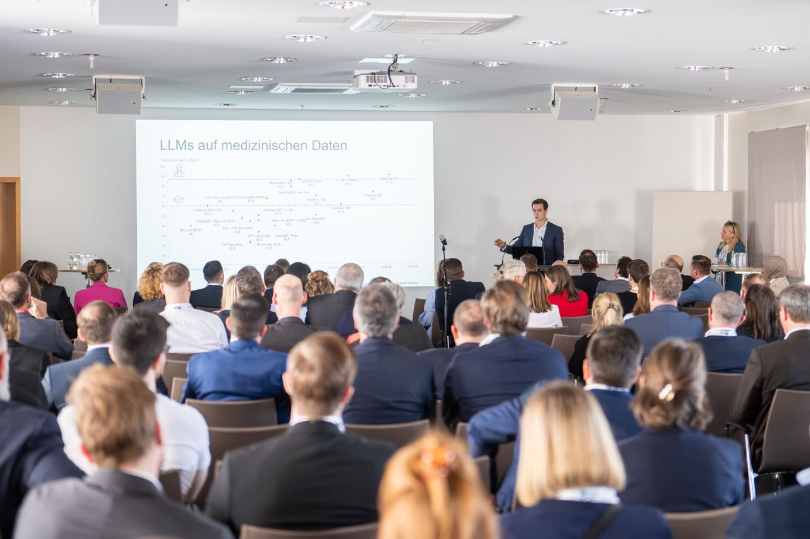
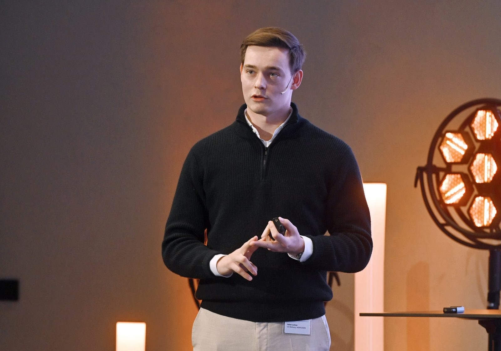
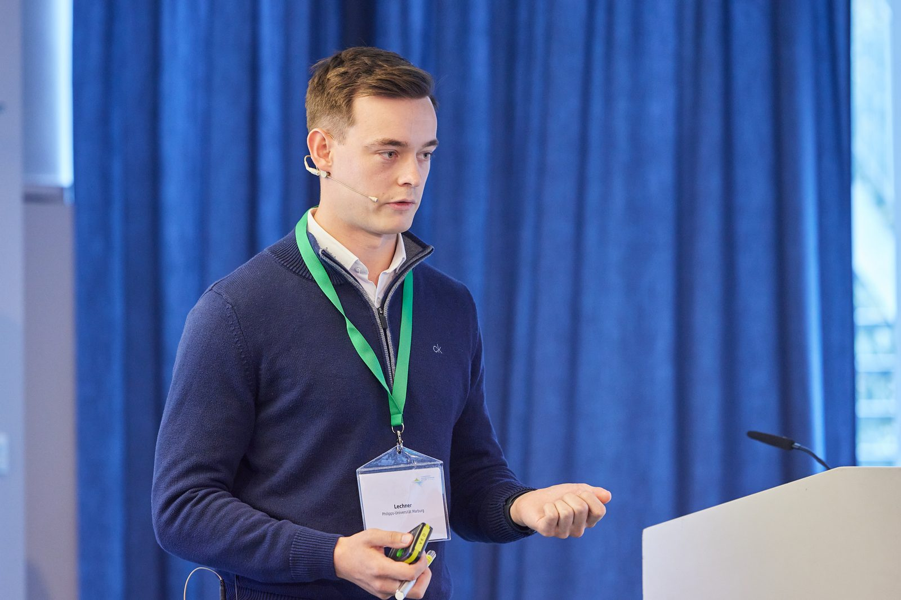

Vorträge
Über 85 Vorträge, Panels und Workshops seit 2022, für Fachgesellschaften, Kliniken, Krankenkassen und die forschende Industrie. Fortbildungen auf Wunsch CME-zertifiziert.
Ausgewählte Vorträge
Eine Auswahl. Anfragen für 2027 sind willkommen.
2026
- Nov.Deutscher Pflegetag, Berlin

- Nov.DDG Herbsttagung, Dresden
- Okt.FH Aachen, Aachen

- Okt.DGKIMED Summit, Berlin, Charité

- Sept.Frankfurt am Main

- Aug.

- Mai
- Apr.132. DGIM-Kongress, Symposium der AG Hausärztliche Internistinnen und Internisten, Wiesbaden
- Apr.Recare AI Summit, Berlin
2025
- Nov.DDG, 106. Kurs Klinische Diabetologie
- JuliTIMETOACT GROUP Insights, Köln
- JuniSiemens Healthineers, Referenzkundenworkshop

- MaiBKK Tag, BKK Landesverband Bayern, München

- Apr.Novo Nordisk, Spezialistentreffen Diabetologie, Radebeul

- MärzDRG-Forum, Berlin

- Feb.Frankfurt am Main

- Jan.Lilly, DMP-Tagung, Bonn

2024
- Nov.diabetesDE, Meilensteine der modernen Diabetologie, Berlin

- Nov.DDG-Präsenz, Berlin
- Sept.Novo Nordisk, Zukunftsforum Diabetes, Mainz
- Sept.Siemens Healthineers, DGKL, Bremen
- Aug.Künstliche Intelligenz – Gibt es bald keine Rheumatologen mehr?Rheumasymposium, Herne
- MaiKongress der Gesundheitsnetzwerker, Berlin
- MärzParlamentarischer Abend, Förderverein unerkannte und seltene Erkrankungen, Wiesbaden

- MärzLilly, Face-to-Face, Frankfurt am Main
2023
- Okt.22. Europäischer Gesundheitskongress, München

- Okt.Siemens Healthineers, DGKL, Mannheim
- Sept.RANLP 2023, Varna
Formate
- Keynote
- 20 bis 45 Minuten für Kongresse, Jahresauftakte und Symposien.
- Zertifizierte Fortbildung
- CME-zertifizierte Vorträge für Ärztinnen und Ärzte, in Präsenz oder online.
- Panel und Moderation
- Podiumsdiskussionen zu KI-Strategie, Regulierung und Versorgung.
- Workshop
- Praxisnahe Formate für Teams, Qualitätszirkel und Führungskräfte.
Themen




Auf der Bühne
Weitere Fotos



Für Veranstalter
Texte und Fotos für Programmheft, Website und Ankündigung. Sprachen: Deutsch, Englisch, Italienisch.
Kurzbiografie, kurz
Fabian Lechner leitet den Zentralen Dienst KI & Daten bei AGAPLESION, einem der großen gemeinnützigen Klinikverbünde in Deutschland. Er promoviert an der Philipps-Universität Marburg zu großen Sprachmodellen in der Medizin. Seit 2022 hat er über 85 Vorträge, Panels und Workshops zu KI in der Medizin gehalten, viele davon CME-zertifiziert.
Kurzbiografie, ausführlich
Fabian Lechner leitet den Zentralen Dienst KI & Daten bei AGAPLESION, einem der großen gemeinnützigen Klinikverbünde in Deutschland. Den Bereich mit Teams für KI, Daten, Anwendungen und Business Intelligence hat er 2025 aufgebaut; zuvor beriet er den Vorstand als Scientific Advisor. Parallel promoviert er an der Philipps-Universität Marburg zur Anpassung und Bewertung großer Sprachmodelle für medizinische Anwendungen. Zu seinen Arbeiten gehören der virtuelle Doktor in der Telefonzelle auf der Bundesgartenschau 2023, leitlinienbasierte Chatbots für die Brustkrebsversorgung und der rheumatologische Benchmark RheumBench. Er studierte Business Studies und Information Technology an der FH Aachen sowie Information Systems an der Philipps-Universität Marburg. Seit 2022 hat er über 85 Vorträge, Panels und Workshops für Fachgesellschaften wie DDG und DGIM, Kliniken, Krankenkassen und die forschende Industrie gehalten, viele davon CME-zertifiziert. Er spricht Deutsch, Englisch und Italienisch.